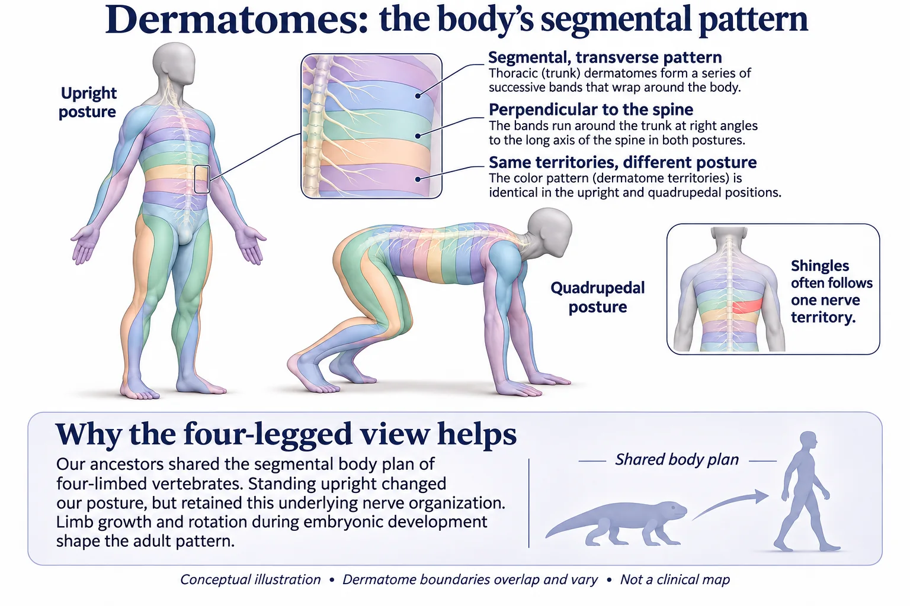

Vaccine information
Shingles
What I want my patients to know about shingles and the vaccine that prevents it.
- Who
- All adults 50 and older, and adults 19 and older with a weakened immune system
- Doses
- Two, given 2 to 6 months apart
- Best time
- Any time of year
- Cost
- $0 with Medicare Part D
Key points
The virus that never left.
If you had chickenpox, your body never fully destroyed the virus. We lock it up. The virus retreats into ganglia, small clusters of nerve cells beside the spinal cord and in the head, and goes quiet for decades.
I think of it this way. After chickenpox, the virus is locked in a jail inside the nerve cluster, and your immune system stands guard. The prisoner never leaves.
Two things keep it there: the nerve cell itself keeps most of the virus’s genes switched off, and the immune system keeps patrolling. As we age, or when illness or medicines weaken the immune system, the guards can get lax. The virus wakes up, travels back down the nerve to the skin, and causes shingles: a painful, blistering rash. The old guard dozes off, the door swings open, and the prisoner slips out down one road: the nerve. Stress gets blamed, but many episodes have no obvious trigger.
The rash heals. For some people, the pain does not. Long-lasting nerve pain after shingles, called postherpetic neuralgia, can go on for months or years. It is the most common complication.
What’s in a name.
These names were coined long before anyone knew about viruses. They describe what doctors saw.
| Word | Origin | What it describes | Same root in |
|---|---|---|---|
| Herpes | Greek herpein, “to creep” | A rash that creeps across the skin | Herpetology, the study of snakes and other creepy crawlies |
| Zoster | Greek zōstēr, “belt” or “girdle” | The band of blisters that wraps around one side of the body | Zostera, the ribbon-like eelgrass |
| Shingles | Latin cingulum, “girdle” | The same belt. It has nothing to do with roof shingles. | Cingulate gyrus, the brain fold that belts around the middle |
| Varicella | Probably “little variola,” or little smallpox | Chickenpox, once thought of as a milder look-alike. The two are caused by entirely different viruses. | Variola, smallpox; variolation, the pre-vaccine practice of deliberate exposure |
Herpes zoster is the disease. Varicella-zoster virus is the virus behind both chickenpox and shingles. And “herpes” here is a family name: this is not the virus that causes cold sores or genital herpes.
Why it follows a stripe.
- 1Locked upAfter chickenpox, the virus hides in a ganglion, a cluster of nerve cells beside the spine. Immune cells keep it in check.
- 2The guards get laxWith age, illness or treatment, patrols thin out. The virus wakes and travels out along the nerve.
- 3A stripe on one sideIt reaches the strip of skin that nerve serves, a dermatome, so the rash wraps one side and stops near the midline.
Each nerve root serves a strip of skin called a dermatome. Shingles usually wakes up in a single ganglion, and the virus travels out along that ganglion’s nerves. The rash traces that nerve’s neighborhood.
The map looks random on a person standing up: bands around the chest, long strips down the arms and legs. It makes sense once you remember that our body plan comes from animals on four legs. Each spinal nerve serves one slice of the body, in order from head to tail. Get down on hands and knees and the slices line up again.

That is also why it stays on one side. The left and right sides of the body have their own ganglia and their own skin territories. The midline is not a wall; it is roughly where that nerve’s territory ends.
| Chickenpox | Shingles | |
|---|---|---|
| What it is | The first infection | The same virus waking up years later |
| How it reaches the skin | Through the bloodstream | Down a nerve |
| Immune memory | None yet | Present, but control has slipped |
| Rash | All over the body | A band on one side |
The short version: chickenpox reaches the skin through the blood; shingles returns to the skin along a nerve. In people with a weakened immune system, shingles can break out of that stripe and spread across the skin or to internal organs.
When it strikes the face.
Shingles on the head deserves prompt attention. The blisters may heal while the nerve damage stays.
| Area | What can happen |
|---|---|
| Forehead and eye | Called herpes zoster ophthalmicus. It can scar the clear front of the eye, inflame the inside of the eye, cause glaucoma, and lead to permanent vision loss. |
| Ear and facial nerve | Called Ramsay Hunt syndrome. Severe ear pain and blisters can come with paralysis of one side of the face, hearing loss, ringing in the ear and vertigo. It can also affect eating, taste and facial expression. |
| Facial nerves | Burning, stabbing pain or extreme sensitivity to touch that lasts long after the rash is gone. |
One unsettling detail: shingles can damage the nerves that let the eye feel pain. An injured eye may hurt less even as its surface fails to heal.
Who should get the vaccine.
- All adults 50 and older.
- Adults 19 and older who have, or will have, a weakened immune system from illness or treatment.
- Even if you already had shingles. Just wait until the rash is gone.
- Even if you had the old vaccine (Zostavax, discontinued in 2020).
- Even if you don’t remember having chickenpox. No blood test is needed.
Can you get shingles without ever having chickenpox? Only if the virus got in some other way. Many people had a mild case that nobody noticed. The childhood chickenpox vaccine, given in the U.S. since 1995, is a live, weakened virus that can also hide in the nerves and, rarely, reactivate. Even so, vaccinated children get shingles far less: one large study found 78% fewer cases than in unvaccinated children. Those children are only now in their early 30s, so we do not yet know their lifetime risk. Someone who has truly never met the virus cannot get shingles; their first infection would be chickenpox.
Shingrix is a different vaccine from the childhood chickenpox shot. It contains one protein from the virus, not live virus, so it cannot cause shingles. It strengthens your immune system’s control over the virus you already carry.
It works remarkably well.
| Age | Protection against shingles | Protection against long-term nerve pain |
|---|---|---|
| 50 to 69 | 97% | 91% (50 and older) |
| 70 and older | 91% | 89% |
For people with weakened immune systems, protection ranges from 68% to 91%, depending on the condition. In people 70 and older, protection stays high for at least 7 years.
A possible bonus: dementia. Research now suggests shingles vaccination may help protect the brain. “May” is the honest word.
| Study | What it found | How much to trust it |
|---|---|---|
| Wales, Nature 2025 | A birth-date cutoff decided who could get the older shingles vaccine, creating two otherwise similar groups. Vaccination cut new dementia diagnoses by 3.5 percentage points over 7 years, about 20%. | Closer to proof of cause and effect than most studies. It tested the old vaccine, Zostavax, not Shingrix. |
| Kaiser Permanente, Nature Communications 2026 | Among about 329,000 adults 65 and older, two doses of Shingrix were linked to a 51% lower risk of dementia than no vaccine, and 27% lower than in people who got a Tdap shot instead. | Encouraging, but observational and funded by the vaccine’s maker. The smaller number compared with Tdap is the more realistic estimate, because people who get vaccines tend to be healthier to begin with. |
| Brown University, Annals of Internal Medicine 2026 | About 510,000 Medicare patients 66 and older entering skilled nursing facilities. Those who got at least one Shingrix dose were 24% less likely to be diagnosed with dementia over 4 years (18.8% vs 24.6%), roughly one fewer diagnosis for every 17 people vaccinated. | Designed to imitate a clinical trial, in frail older adults, and with the vaccine we use today. Still observational, and funded by the vaccine’s maker. |
Why might it help? Keeping the virus asleep may spare the brain and its blood vessels from inflammation, or the vaccine may stimulate the immune system in ways we do not yet understand. These studies do not show that the virus causes most dementia. My bottom line: we recommend the vaccine to prevent shingles and its lasting nerve and eye damage. Protecting the brain may be an added benefit.
Plan a quiet day.
Shingrix has a reputation, and it is earned. Many people get a sore arm, and some feel tired, achy, headachy, chilled or feverish, or have an upset stomach. It usually lasts 2 to 3 days and is more common in younger people.
That is your immune system doing exactly what we want. I tell patients to plan an easy day after each dose. If the first dose knocked you down, still get the second. The second dose is what makes protection last.
If your second dose is late, get it as soon as you can. You do not need to start over.
Guillain-Barré syndrome, a rare nerve condition, has been reported very rarely after Shingrix. Having shingles itself also carries a very small increased risk.
When to wait.
- You have shingles right now.
- You are pregnant. Wait until after the pregnancy.
- You are moderately or severely ill. A cold is not a reason to wait.
- Do not get it if you had a severe allergic reaction to Shingrix or one of its ingredients.
Further reading
- CDC: Shingles vaccination
- CDC: Shingrix clinical considerations
- Eyting et al., Nature (2025): a natural experiment on shingles vaccination and dementia
- Rayens et al., Nature Communications (2026): Shingrix and dementia risk
- Brown University: study suggests shingles vaccine may lower dementia risk
- Weinmann et al., Pediatrics (2019): shingles in vaccinated and unvaccinated children
- Medicare: shingles shot coverage
Educational information only, not medical advice for you. Your clinician or pharmacist can tell you exactly what you need based on your health and vaccine history.
Federal vaccine guidance has changed several times since 2025. This page follows current CDC recommendations and notes where other medical organizations add to them. Last reviewed November 2026.
In an emergency, call 911. For a mental health crisis, call or text 988.